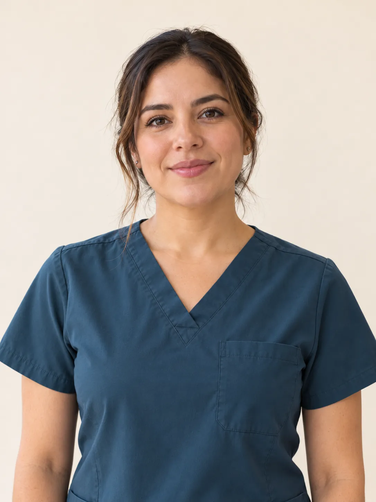

Me recomendaron
cirugía de vesícula.
Lleva los estudios que tengas y pregunta por las opciones para tu caso.
Pedir una valoraciónCirujana general en CDMX
Conoce tus opciones con la
Dra. Mariana Barragán.
Cirujana certificada que opera sobre todo con técnicas de mínima invasión. Consulta por vesícula, hernias o reflujo en Hospital Ángeles Universidad.
El WhatsApp lo contesta ella.
Texto clínico por validar con la doctora.

FormaciónLa Salle + UNAM
Consejo de la especialidadCertificación vigente
ConsultorioÁngeles Universidad
Motivos de consulta
Si ya tienes un diagnóstico o te recomendaron una cirugía, puedes pedir una valoración para revisar tu caso y tus estudios.
Lleva los estudios que tengas y pregunta por las opciones para tu caso.
Pedir una valoraciónPregunta si necesitas cirugía y qué opciones de tratamiento tienes.
Consultar con la doctoraCuéntale qué tratamientos has llevado y qué dudas tienes.
Agendar consultaEste sitio no ofrece atención de urgencias.
¿Buscas atención por otro motivo? Pregunta antes de agendar.
Lista tomada de su Instagram · por validar con la doctora
Conoce a la doctora
Cirugía general y gastrointestinal
Estudió medicina en la Universidad La Salle y cursó la especialidad en la UNAM. Tiene certificación vigente del consejo de su especialidad.
Opera principalmente por laparoscopía y atiende en Hospital Ángeles Universidad, al sur de la Ciudad de México.
Textos y certificación por validar con la doctora. Cédulas no verificadas externamente.
Agendar con MarianaSu forma de operar
La laparoscopía se hace con una cámara e instrumentos delgados que entran por incisiones pequeñas. Es la técnica que la doctora usa con más frecuencia.
En consulta se revisa si es adecuada para tu cirugía. Pregunta cómo se hace, qué preparación necesitas y cómo sería la recuperación.
La doctora también opera con robot en algunos casos. No todas las pólizas lo cubren: si tienes seguro, pregunta a tu aseguradora antes de programar.
Texto por validar con la doctora.
Ver preguntas frecuentesGalería
Estas imágenes no muestran a la doctora, sus pacientes ni sus instalaciones. Se sustituirán cuando envíe sus fotografías.
Imagen 1 de 8
En Instagram
Mira sus reels en Instagram. La información es general y no sustituye una consulta médica.
Ver su perfil en InstagramLos videos se cargan desde Instagram.
Antes de programar
Coméntalo al agendar. Antes de fijar una fecha, confirma con tu aseguradora qué cubre tu póliza y cuáles son sus requisitos.
Pregunta a tu aseguradora si cubre el padecimiento y si ya cumpliste el periodo de espera que corresponda.
Si la doctora indica cirugía, pregunta qué informe médico, estudios y documentos pide tu aseguradora.
Si la aseguradora autoriza la cirugía, revisa qué cubre y qué te toca pagar, como el deducible y el coaseguro.
Confirma los requisitos del hospital y la vigencia de la autorización, si tu aseguradora la requiere.
Información general, por validar con la doctora.
Logos de demostración. No indican convenios, aceptación de pólizas ni cobertura. No se ha confirmado que la doctora pertenezca a sus redes.

El carrusel se detiene al pasar el cursor o al tocarlo. Con movimiento reducido, puedes desplazar las marcas a mano.
La cobertura la confirma tu aseguradora.
La información es general y está por validar con la doctora.
Tu primera consulta
En la consulta se revisa tu caso y puedes hacer todas tus preguntas. Estos pasos te ayudan a prepararla.
Pedir mi citaConsulta horarios y agenda por WhatsApp. También puedes llamar al 55 4351 4313.
Estudios, análisis y una lista de tus medicamentos. Pregunta al agendar si necesitas alguna preparación.
Cuándo empezaron las molestias, qué te han indicado y qué quieres saber sobre tus opciones.
Antes de agendar
Las dudas sobre tu caso se resuelven en consulta.
No. La consulta sirve para revisar el diagnóstico y los estudios antes de decidir el tratamiento.
No siempre. La doctora revisa en consulta qué técnica conviene en tu caso. Texto por validar con la doctora.
Menciona tu aseguradora al agendar y confirma con ella las condiciones de tu póliza. Los logos de esta propuesta no son una lista de seguros aceptados ni garantizan cobertura.
Sí, en algunos casos. Si tienes seguro, confirma con tu aseguradora si tu póliza cubre esta técnica antes de programar. Texto por validar con la doctora.
No. WhatsApp es para pedir una cita. La información de este sitio no sustituye una consulta médica. Este sitio no ofrece atención de urgencias.
Tu consulta en CDMX
Confirma el número de consultorio al pedir tu cita.
Xoco · Benito Juárez · CDMX
El siguiente paso
Escríbele para consultar horarios y pedir tu cita en Hospital Ángeles Universidad. El WhatsApp lo contesta ella.